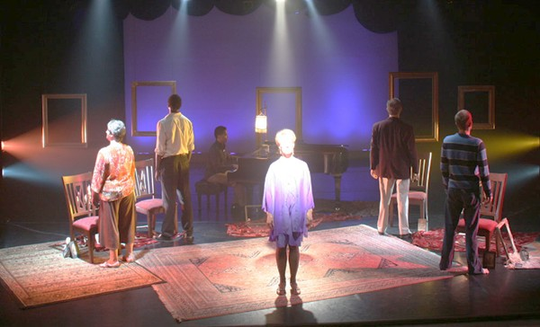

Kevin Johnson, Artistic Director PRESENTS
By William Finn
(25th Annual Putnam County Spelling Bee, Falsettoland, A New Brain)NOVEMBER 10-12, 17-19, 2006
Zuzi's Theatre
738 N. Fifth Ave.
Tim Fuller photo
Featuring
Betty Craig
with
Kit Runge
Marcus Terrell Smith
Diane Thomas
and
Joey Topmiller
Kevin Johnson, Director
Aryo Wicaksono, Music Director/Pianist
Zachary Ciaburri, Lighting Designer
ELEGIES / LOOKING UP is a song cycle that explores loss, courage and finding light and humor in difficult situations--whether it be a neighbor moving, the loss of a pet or a relative or the aftermath of 9/11.
Running time: 90 minutes with no intermission.
"What I thought would be an evening about sad songs turns out to be touching, at times hilarious, and uplifting... highly recommended." —
OUT Magazine, NYC.
" . . . breathtaking in the depth of breadth of its commentary--the show offers infinite joy!" - Theatremania
NEW! The 2007 Tucson Weekly's "Best Of . . . " edition named ELEGIES/LOOKING UP as "Best Musical.""Of all the musicals presented in Tucson last season--Arizona Theatre Company alone mounted three by the time we lost count--the biggest potential downer turned out to be the most uplifting. Elegies is a William Finn cycle of songs that react to the loss of people (and dogs) dear to us. Each item is a tender remembrance of people lost to us, and yet each song celebrates the joy and love these people gave us. The cast, the pianist, the set designer, the director-producer (Kevin Johnson)--all collaborated on an absolutely perfect and moving evening of intimate musical theater. If Arizona Onstage ever chooses to bring one of its productions back from the dead (other than the infinitely more commercially successful Bark) please let it be Elegies."
Here are some photos from the production
by lighting designer Zach Ciaburri .
